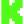
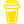

Ułóż swoją scenę.
Łącz źródła i nakładki w kompozycje. Przełączaj sceny i miej podgląd transmisji zawsze pod ręką.
DLA TWÓRCÓW. OD DRAUG AUDIO.
Sceny, czat i dźwięk w jednym miejscu.
Zryv daje Ci przestrzeń na to, co najważniejsze — tworzenie.
Windows 11 · Microsoft Store
Aplikacja w fazie wewnętrznej bety

Kick
Buy Me a CoffeeMNIEJ PRZEŁĄCZANIA. WIĘCEJ TWORZENIA.
Łącz źródła i nakładki w kompozycje. Przełączaj sceny i miej podgląd transmisji zawsze pod ręką.
Czat z YouTube, Twitcha i Kicka w jednym miejscu. Do tego alerty i statystyki Twojego streamu.
Zarządzaj dźwiękiem, wybierz cele transmisji RTMP i zapisuj nagrania na swoim komputerze.
TWÓJ KOLEJNY STREAM ZACZYNA SIĘ TUTAJ.